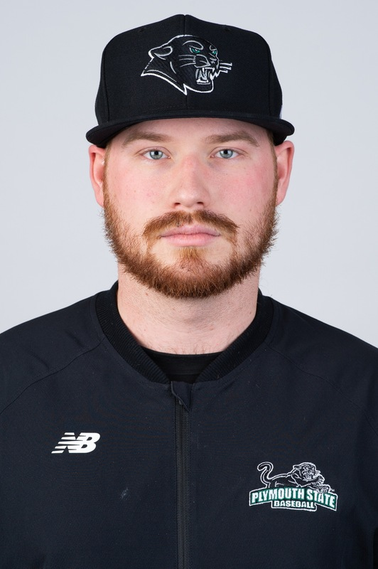
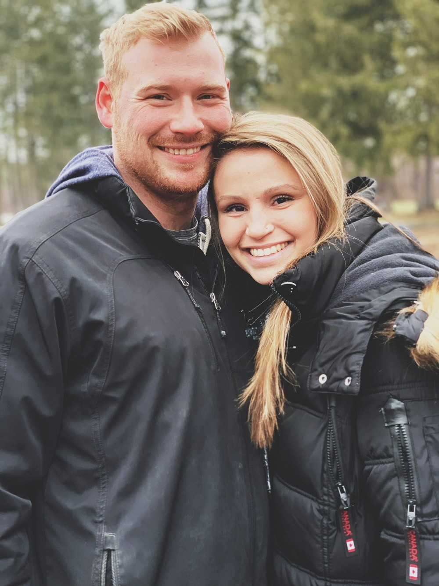
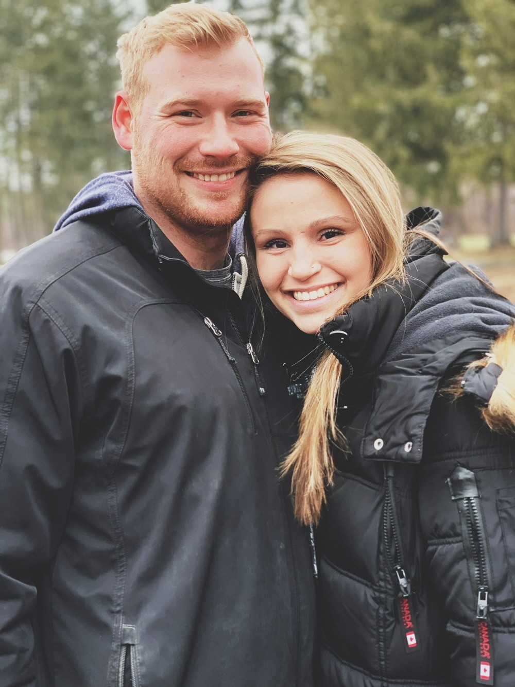

Welcome to My About Me Page!
 
  My name is Ryan Boldwin. I am from Burlington, Vermont and this is my first semester at URI. Before URI I had attended Plymouth State University where I graduated with a degree in Physical Education in 2019.
After graduating I enlisted in the United States Army as a military Police Officer. I was in the army from 2020 until 2022. After completing my commitment in the Army I was hired as a physical education teacher in New Hampshire. This is where I realized that teaching was not the career I wanted pursue and I had recently gotten into coding and the science of computer languages.
After My wife had been accepted to URI for the Chemistry PHD program I decided that I would switch my career projectory and obtain another degree, this time Computer Sciences!
I played baseball at Plymouth and still love baseball very much! I also really enjoy playing many different kinds of video games! The picture on the left is a photo of me and my wife!
 My name is Ryan Boldwin. I am from Burlington, Vermont and this is my first semester at URI. Before URI I had attended Plymouth State University where I graduated with a degree in Physical Education in 2019.
After graduating I enlisted in the United States Army as a military Police Officer. I was in the army from 2020 until 2022. After completing my commitment in the Army I was hired as a physical education teacher in New Hampshire. This is where I realized that teaching was not the career I wanted pursue and I had recently gotten into coding and the science of computer languages.
After My wife had been accepted to URI for the Chemistry PHD program I decided that I would switch my career projectory and obtain another degree, this time Computer Sciences!
I played baseball at Plymouth and still love baseball very much! I also really enjoy playing many different kinds of video games! The picture on the left is a photo of me and my wife!